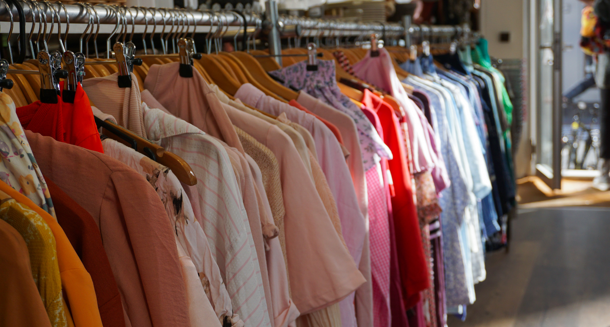
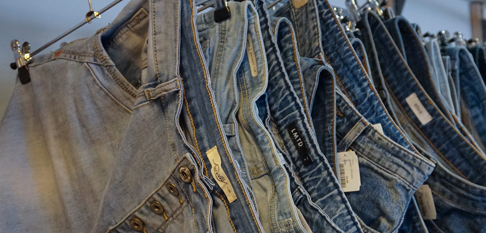
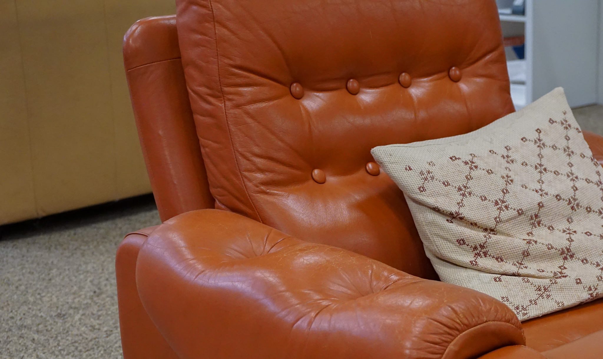
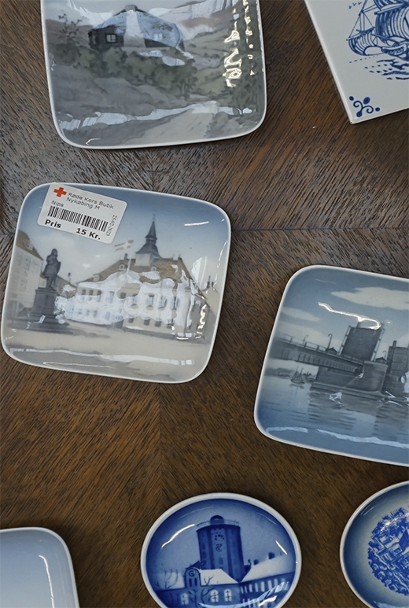

Bæredygtig Skattejagt
Genbrugsshopping På SU-niveau

Når man starter på sit studieliv er der mange der går fra, at have enten fast eller deltids job,
hvor
indkomsten er en del højere, end den er når man starter studie og SU. Derfor kan det være en udfordring at
have råd til at udvikle sin stil både i forhold til bolig og mode. Derudover er der sikkert mange som har
lyst til at vælge den bæredygtige løsning. Men det kan til tider være svært, da bæredygtige produkter af
alle slag ofte er en større investering, som man ikke har råd til når ens eneste indkomst er SU.
Men bare fordi, at man lever på SU er det ikke altid nødvendigt at gå på kompromis med bæredygtigheden og
med stilen. Der er nemlig mange måder hvorpå man kan købe både billigt og bæredygtigt.
Her i artiklen vil jeg komme med tips og tricks til hvordan du, som studerende på SU, både kan
udvide/udskifte din garderobe, indrette dit hjem og samtidig måske være en smule kreativ.
_________________________________________________________________
Genbrugsbutikker I Århus
Der findes uanede mængder af genbrugsbutikker i Århus centrum. Der er de velgørende genbrugsbutikker, såsom Røde Kors, men også mange vintage butikker og markeder som er med til at gøre din jagt efter din helt egen stil, endnu sjovere.
_________________________________________________________________
Genbrug i Århus Centrum
Se hotel.com’s liste over genbrugsbutikker og markeder i Århus:
De 10 bedste genbrugsbutikker i ÅrhusReuse:
Udover de klassiske genbrugsbutikker som donerer til velgørenhed, findes der
også
Reuse som er en genbrugsstation midt i Århus hvor du GRATIS kan afleverer og tage ting som andre har
indleveret
- bedre bliver det ikke!
Læs mere om Reuse her
 
_________________________________________________________________
Genbrug I Århus Omegn
Genbrugsbutikker i midtbyen kan være dyre, men det er faktisk ikke så svært at finde gode og billige genbrugsbutikker i omegnen af Århus, som er nemme at komme til. Kigger man f.eks på genbrugsbutikker i Egå, finder man hurtigt ud af at de både er gode og nemme at komme til.
Genbrugsjagt I Århus Omegn
Egå
Røde Kors: Muslingevej 24, 8250 Egå
Kirkens korshær: Gåseagervej 4, 8250 Egå
takeNOW - reol salg: Egå Havvej 2L, 8250 Egå
Sabro
Århus klunserne: Poppelgårdsvej 1, 8471 Sabro
Højbjerg
takeNOW - reol salg: Bjødstrupvej 20A, 8310 Tranbjerg
Så nu er det bare op til dig at gå ud og finde, den du syntes er, den bedste genbrug i Århus og begynde at udvikle din stil på en bæredygtig måde.